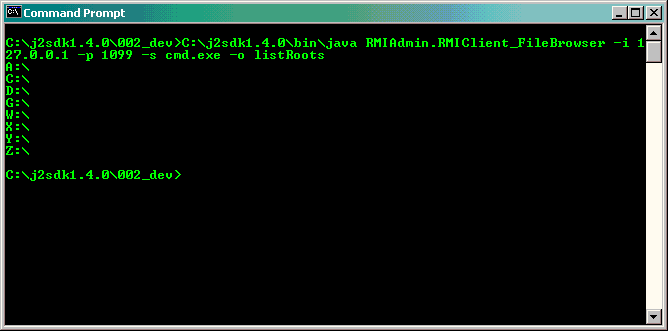

For example, you may wish to perform file operations via Command Prompt (for Windows) or Console (for Unix-like Computer) rather than using the RMIAdmin GUI. The benefit is that you could then embed all your instructions into batch (*.bat) or shell script (*sh), and therefore the integration with other scripting/programming languages is made possible.
Usage instructions
-
java RMIAdmin.RMIAdminClient_FileBrowser -h
Display the help menu
-
java RMIAdmin.RMIAdminClient_FileBrowser -i ip_address
Specify the "IP Address" of remote RMIServer e.g. "203.186.94.62"
-
java RMIAdmin.RMIAdminClient_FileBrowser -p port_no
Specify the "Port Number" of remote RMIServer e.g. "1099"
-
java RMIAdmin.RMIAdminClient_FileBrowser -s shell
Specify the "Shell" of remote RMIServer e.g. "cmd.exe or /bin/bash"
-
java RMIAdmin.RMIAdminClient_FileBrowser -o "file_operations"
Specify the "Operation" of file to be executed on remote RMIServer.-
Available "file_operations":
-
listRoots
list the available drives on Remote Server
[Windows Example - list all the available drives of remote computer 203.186.94.62]
java RMIAdmin.RMIAdminClient_FileBrowser -i 203.186.94.62 -p 1099 -s cmd.exe -o listRoots

[Linux Example - list all the available drives of remote computer 203.186.94.62]
java RMIAdmin.RMIAdminClient_FileBrowser -i 203.186.94.61 -p 1099 -s /bin/bash -o listRoots
-
listFiles "Target PathName"
list all files or directories of the specified path on Remote Server
[Windows Example - list all the files/folders under c:\]
java RMIAdmin.RMIClient_FileBrowser -i 203.186.94.62 -p 1099 -s cmd.exe -o listFiles "c:\"
[Linux Example - list all the files/folders under /] java RMIAdmin.RMIClient_FileBrowser -i 203.186.94.61 -p 1099 -s /bin/bash -o listFiles "/"
-
getFileInfo "Target PathName"
get all properties of the file or directory specified on Remote Server
[Windows Example - get the file information of the path c:\Windows]
java RMIAdmin.RMIClient_FileBrowser -i 203.186.94.62 -p 1099 -s cmd.exe -o getFileInfo "c:\Windows"
[Linux Example - get the file information of the path /etc]
java RMIAdmin.RMIClient_FileBrowser -i 203.186.94.61 -p 1099 -s /bin/bash -o getFileInfo "/etc"
-
create "Target PathName" "File Type [Directory|File]"
create file or directory on Remote Server
[Windows Example - Create a folder under c:\ with name test]
java RMIAdmin.RMIClient_FileBrowser -i 203.186.94.62 -p 1099 -s cmd.exe -o create "c:\test" "Directory"
[Linux Example - Create a folder under /etc with name test]
java RMIAdmin.RMIClient_FileBrowser -i 203.186.94.61 -p 1099 -s /bin/bash -o create "/etc/test" "Directory"
-
delete "Target PathName"
delete file or directory on Remote Server
[Windows Example - Delete a folder under c:\ with name test]
java RMIAdmin.RMIClient_FileBrowser -i 203.186.94.62 -p 1099 -s cmd.exe -o delete "c:\test"
[Linux Example - Delete a folder under /etc with name test]
java RMIAdmin.RMIClient_FileBrowser -i 203.186.94.61 -p 1099 -s /bin/bash -o delete "/etc/test"
-
rename "Original PathName" "Modified PathName"
rename file or directory on Remote Server
[Windows Example - Rename a folder under c:\ with name test to new name test_1]
java RMIAdmin.RMIClient_FileBrowser -i 203.186.94.62 -p 1099 -s cmd.exe -o rename "c:\test" "c:\test_1"
[Linux Example - Rename a folder under /etc/ with name test to new name test_1]
java RMIAdmin.RMIClient_FileBrowser -i 203.186.94.61 -p 1099 -s /bin/bash -o rename "/etc/test" "/etc/test_1"
-
copy "Source PathName" "Destination Path"
copy file or directory on Remote Server
[Windows Example - Copy a folder under c:\ with name test to a:\]
java RMIAdmin.RMIClient_FileBrowser -i 203.186.94.62 -p 1099 -s cmd.exe -o copy "c:\test" "a:\"
[Linux Example - Copy a folder under /etc with name test to /mnt/floppy]
java RMIAdmin.RMIClient_FileBrowser -i 203.186.94.61 -p 1099 -s /bin/bash -o copy "/etc/test" "/mnt/floppy"
-
copy "Source PathName" "Destination Path" -r
overwrite even if target exist
[Windows Example - Copy a folder under c:\ with name test to a:\ even exist]
java RMIAdmin.RMIClient_FileBrowser -i 203.186.94.62 -p 1099 -s cmd.exe -o copy "c:\test" "a:\" -r
[Linux Example - Copy a folder under /etc with name test to /mnt/floppy even exist]
java RMIAdmin.RMIClient_FileBrowser -i 203.186.94.61 -p 1099 -s /bin/bash -o copy "/etc/test" "/mnt/floppy" -r
-
move "Source PathName" "Destination Path"
move file or directory on Remote Server
[Windows Example - Move a folder under c:\ with name test to a:\]
java RMIAdmin.RMIClient_FileBrowser -i 203.186.94.62 -p 1099 -s cmd.exe -o move "c:\test" "a:\"
[Linux Example - Move a folder under /etc with name test to /mnt/floppy]
java RMIAdmin.RMIClient_FileBrowser -i 203.186.94.61 -p 1099 -s /bin/bash -o mvoe "/etc/test" "/mnt/floppy"
-
move "Source PathName" "Destination Path" -r
overwrite even if target exist
[Windows Example - Move a folder under c:\ with name test to a:\ even exist]
java RMIAdmin.RMIClient_FileBrowser -i 203.186.94.62 -p 1099 -s cmd.exe -o move "c:\test" "a:\" -r
[Linux Example - Move a folder under /etc with name test to /mnt/floppy even exist]
java RMIAdmin.RMIClient_FileBrowser -i 203.186.94.61 -p 1099 -s /bin/bash -o mvoe "/etc/test" "/mnt/floppy" -r
-
listRoots
Usage Tips
-
Note that the command entered is non-case sensitive for Windows, but
case sensitive for all unix-like system.
-
If the command entered contain double quotes, the \ symbol should be included for the double quotes to
be passed in properly.
[Windows Example]
java RMIAdmin.RMIAdminClient_FileBrowser -i 203.186.94.62 -p 1099 -s cmd.exe -o copy "\"c:\program files\test\"" "a:"
-
Cross-platform execution is supported, therefore you can perform use command mode on a Linux Machine to
invoke instructions on remote Windows Machine, and vice versa.
-
To run this command successfully, you must include the path (including filename) where
you placed the RMIAdmin program (RMIAdmin.jar) in the system classpath.
[Windows Example]
set CLASSPATH=%CLASSPATH%;fullpath_of_RMIAdmin.jar
e.g. set CLASSPATH=%CLASSPATH%;c:\RMIAdmin\RMIAdmin.jar
* Assume RMIAdmin.jar is installed in C:\RMIAdmin
[Linux Example]
CLASSPATH=$CLASSPATH:fullpath_of_RMIAdmin.jar
e.g. CLASSPATH=$CLASSPATH:/RMIAdmin/RMIAdmin.jar
* Assume RMIAdmin.jar is installed in /RMIAdmin
-
Other than setting the system classpath, you may also use the java -cp parameter to
specify the CLASSPATH at runtime.
[Windows Example]
java -cp fullpath_of_RMIAdmin.jar
e.g. java -cp C:\RMIAdmin\RMIAdmin.jar RMIAdmin.RMIClient_FileBrowser -i ......
* Assume RMIAdmin.jar is installed in C:\RMIAdmin
[Linux Example]
java -cp fullpath_of_RMIAdmin.jar
e.g. java -cp /RMIAdmin/RMIAdmin.jar RMIAdmin.RMIClient_FileBrowser -i ......
* Assume RMIAdmin.jar is installed in /RMIAdmin
Related Topics:
|
|
Copyright 2005 © RMIAdmin. All rights reserved. |